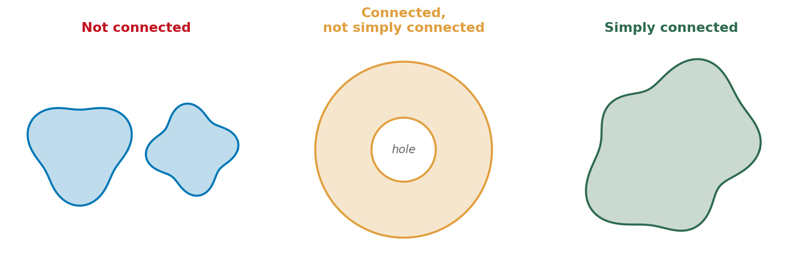

Section 16.3: The Fundamental Theorem for Line Integrals
MTH 310 — Calculus III | Vector Calculus
The Big Shortcut
In Section 16.2, we computed \(\int_C \vec{F} \cdot d\vec{r}\) for \(\vec{F} = \langle 1+y, x \rangle\) along the upper semicircle from \((-1,0)\) to \((1,0)\). It took a full page: parameterize, compute \(\vec{r}'(t)\), dot product, integrate.
But \(\vec{F}\) is conservative — we found in 16.1 that \(f(x,y) = x + xy\) satisfies \(\nabla f = \vec{F}\).
So:
\[\int_C \vec{F} \cdot d\vec{r} = f(1,0) - f(-1,0) = (1+0) - (-1+0) = 2\]
One line. No parameterization. And the answer is the same along any path from \((-1,0)\) to \((1,0)\).
The Fundamental Theorem for Line Integrals
Theorem: Fundamental Theorem for Line Integrals
If \(\vec{F} = \nabla f\) and \(C\) is a smooth curve from \(A\) to \(B\), then
\[\boxed{\int_C \vec{F} \cdot d\vec{r} = f(B) - f(A)}\]
Compare with Calculus I:
| Calculus I | Calculus III | |
|---|---|---|
| Integrand | \(f(x) = F'(x)\) | \(\vec{F} = \nabla f\) |
| Antiderivative | \(F\) | \(f\) (potential function) |
| Result | \(F(b) - F(a)\) | \(f(\text{end}) - f(\text{start})\) |
Why? The chain rule gives \(\nabla f \cdot \vec{r}'(t) = \frac{d}{dt}f(\vec{r}(t))\), so the integral collapses by the ordinary FTC.
Example 1: Gravitational Force (Part a)
The gravitational force on a mass \(m\) due to a mass \(M\) at the origin is:
\[\vec{F}(\vec{x}) = -\frac{mMG}{|\vec{x}|^3}\,\vec{x} \qquad\text{i.e.,}\qquad \vec{F}(x,y,z) = -\frac{mMG}{(x^2+y^2+z^2)^{3/2}}\langle x, y, z \rangle\]
The claimed potential function is:
\[f(\vec{x}) = \frac{mMG}{|\vec{x}|} \qquad\text{i.e.,}\qquad f(x,y,z) = \frac{mMG}{\sqrt{x^2+y^2+z^2}}\]
Verify that \(\nabla f = \vec{F}\).
Write \(f = mMG(x^2+y^2+z^2)^{-1/2}\). Let \(r = (x^2+y^2+z^2)^{1/2}\). Compute \(f_x\) using \(\frac{d}{dx}r^{-1} = -r^{-2}\cdot\frac{\partial r}{\partial x}\). Then \(f_y\), \(f_z\) by symmetry.
Let \(r = |\vec{x}| = (x^2+y^2+z^2)^{1/2}\), so \(f = mMG \cdot r^{-1}\).
\[f_x = mMG \cdot (-1) r^{-2} \cdot \frac{\partial r}{\partial x} = -\frac{mMG}{r^2}\cdot\frac{x}{r} = -\frac{mMG\, x}{r^3}\]
By symmetry, \(f_y = -\frac{mMG y}{r^3}\) and \(f_z = -\frac{mMG z}{r^3}\).
\[\nabla f = -\frac{mMG}{r^3}\langle x, y, z \rangle = -\frac{mMG}{|\vec{x}|^3}\,\vec{x} = \vec{F} \quad\checkmark\]
Example 1: Gravitational Force (Part b)
Now that we know \(\vec{F} = \nabla f\) with \(f(\vec{x}) = \dfrac{mMG}{|\vec{x}|}\):
Find the work done moving \(m\) from \((5,10,12)\) to \((1,2,3)\) along any smooth curve.
Use the FTC for line integrals: \(W = f(\text{end}) - f(\text{start})\).
Apply the theorem:
\[W = f(1,2,3) - f(5,10,12) = \frac{mMG}{\sqrt{14}} - \frac{mMG}{\sqrt{269}} = mMG\!\left(\frac{1}{\sqrt{14}} - \frac{1}{\sqrt{269}}\right)\]
Three Consequences of Being Conservative
If \(\vec{F} = \nabla f\) on an open, connected region \(D\):
1. Path independence. \(\int_C \vec{F} \cdot d\vec{r}\) depends only on the endpoints — any path from \(A\) to \(B\) gives \(f(B) - f(A)\).
2. Closed loops give zero. If \(C\) starts and ends at \(A\):
\[\oint_C \vec{F} \cdot d\vec{r} = f(A) - f(A) = 0\]
A conservative force does zero net work around any closed loop.
3. Cross-partials test. If \(\vec{F} = \nabla f = \langle P, Q \rangle\), then \(P = f_x\) and \(Q = f_y\), so Clairaut's theorem gives:
\[P_y = f_{xy} = f_{yx} = Q_x\]
On a simply connected domain (no holes), the converse is also true: \(P_y = Q_x \;\Rightarrow\; \vec{F}\) is conservative.
Simply Connected Regions
Simply Connected
A region is simply connected if it is one piece and has no holes.

Why it matters: On a domain with holes, the cross-partials test can give a false positive — \(P_y = Q_x\) everywhere, but \(\vec{F}\) is still not conservative. We'll see a famous example in Section 16.4.
Quick Check: Is It Conservative?
Determine whether each field is conservative:
- \(\vec{F} = \langle 2xy + 3,\; x^2 - 4y \rangle\)
- \(\vec{G} = \langle y^2,\; 3xy \rangle\)
For each: identify \(P\) and \(Q\), compute \(P_y\) and \(Q_x\), compare.
(1) \(P_y = 2x\), \(Q_x = 2x\). Equal \(\Rightarrow\) conservative.
(2) \(P_y = 2y\), \(Q_x = 3y\). Not equal \(\Rightarrow\) not conservative.
Finding Potential Functions
When \(P_y = Q_x\) confirms \(\vec{F}\) is conservative, find \(f\):
Step 1: Integrate \(f_x = P\) with respect to \(x\):
\[f(x,y) = \int P\,dx + g(y)\]
(The “constant” is a function of \(y\) — it vanishes under \(\partial/\partial x\).)
Step 2: Differentiate with respect to \(y\) and set equal to \(Q\):
\[f_y = \frac{\partial}{\partial y}\!\left[\int P\,dx\right] + g'(y) = Q \qquad\Rightarrow\qquad \text{solve for } g'(y)\]
Step 3: Integrate \(g'(y)\) to find \(g(y)\). Write the complete \(f\).
Example 2: Find the Potential and Evaluate
Example 2
Show that \(\vec{F} = \langle ye^x + \sin y + 3x^2,\; e^x + x\cos y + y^2 \rangle\) is conservative, find \(f\), and evaluate \(\int_C \vec{F} \cdot d\vec{r}\) from \((0,0)\) to \((1, \pi/2)\).
First verify \(P_y = Q_x\). Then integrate \(P\) with respect to \(x\) to find \(f\).
Test: \(P_y = e^x + \cos y\), \(Q_x = e^x + \cos y\). \checkmark
Find \(f\): \(\displaystyle f = \int (ye^x + \sin y + 3x^2)\,dx = ye^x + x\sin y + x^3 + g(y)\)
\(f_y = e^x + x\cos y + g'(y) = e^x + x\cos y + y^2 \;\;\Rightarrow\;\; g'(y) = y^2 \;\;\Rightarrow\;\; g(y) = \frac{y^3}{3}\)
\(f(x,y) = ye^x + x\sin y + x^3 + \dfrac{y^3}{3}\)
Evaluate: \(\displaystyle\int_C \vec{F}\cdot d\vec{r} = f\!\left(1,\frac{\pi}{2}\right) - f(0,0) = \frac{\pi e}{2} + 1 + 1 + \frac{\pi^3}{24} - 0 = \frac{\pi e}{2} + 2 + \frac{\pi^3}{24}\)
Example 3: When the Potential Has No Closed Form
Example 3
Let \(\vec{F} = \langle 2xy,\; x^2 + e^{y^2} \rangle\) and let \(C\) be the curve \(y = 1 + \sin(\pi x / 3)\) from \((0,1)\) to \((3,1)\).
Evaluate \(\displaystyle\int_C \vec{F} \cdot d\vec{r}\).
Check: is \(\vec{F}\) conservative? Try to find \(f\). What goes wrong? Can you still evaluate the integral?
Test: \(P_y = 2x\), \(Q_x = 2x\). Conservative! \checkmark
Try to find \(f\): From \(f_x = 2xy\): \(f = x^2 y + g(y)\).
Then \(f_y = x^2 + g'(y) = x^2 + e^{y^2}\), so \(g'(y) = e^{y^2}\). No closed form!
But we can still evaluate the integral. Both endpoints have \(y = 1\):
\[f(3,1) - f(0,1) = \bigl(9 + g(1)\bigr) - \bigl(0 + g(1)\bigr) = 9\]
The unknown \(g\) cancels because the \(y\)-values match.
Alternatively: use path independence. Replace \(C\) with the horizontal line \(y = 1\) from \(x = 0\) to \(x = 3\). Along this path \(dy = 0\), so \(\int_C \vec{F}\cdot d\vec{r} = \int_0^3 2x(1)\,dx = 9\). \checkmark
Example 4: A 3D Conservative Field
Example 4
Determine whether \(\vec{F} = \langle 2xz + y^2,\; 2xy,\; x^2 + 3z^2 \rangle\) is conservative. If so, find \(f\) and evaluate \(\int_C \vec{F} \cdot d\vec{r}\) from \((1,0,1)\) to \((2,1,3)\).
In 3D, if \(f\) exists then \(P = f_x\), \(Q = f_y\), \(R = f_z\). Clairaut says all mixed partials must match: \(P_y = Q_x\), \(P_z = R_x\), \(Q_z = R_y\). Check all three pairs.
Test (Clairaut on each pair):
\(P_y = 2y = Q_x\) \checkmark \;(\(f_{xy} = f_{yx}\)), \(P_z = 2x = R_x\) \checkmark \;(\(f_{xz} = f_{zx}\)), \(Q_z = 0 = R_y\) \checkmark \;(\(f_{yz} = f_{zy}\))
Find \(f\): From \(f_x = 2xz + y^2\): \(f = x^2z + xy^2 + g(y,z)\).
From \(f_y = 2xy + g_y = 2xy\): \(g_y = 0\), so \(g = h(z)\).
From \(f_z = x^2 + h'(z) = x^2 + 3z^2\): \(h'(z) = 3z^2\), so \(h(z) = z^3\).
\(f(x,y,z) = x^2z + xy^2 + z^3\)
\(\int_C \vec{F}\cdot d\vec{r} = f(2,1,3) - f(1,0,1) = (12 + 2 + 27) - (1 + 0 + 1) = 41 - 2 = \boxed{39}\)
Section 16.3 Summary
Fundamental Theorem
If \(\vec{F} = \nabla f\), then \(\int_C \vec{F} \cdot d\vec{r} = f(\text{end}) - f(\text{start})\). No parameterization needed.
Equivalences
Conservative \(\iff\) path independent \(\iff\) \(\oint \vec{F}\cdot d\vec{r} = 0\) for every closed curve.
Cross-Partials Test
\(\langle P, Q \rangle\) is conservative on a simply-connected domain iff \(P_y = Q_x\). In 3D, also check \(P_z = R_x\) and \(Q_z = R_y\).
Finding \(f\)
Integrate one component, match the others, peel off the unknown function one variable at a time.